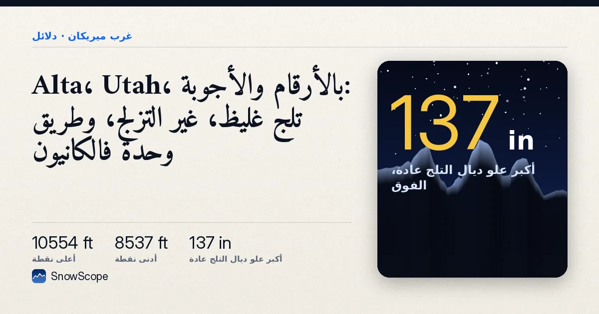

Alta، Utah، بالأرقام والأجوبة: تلج غليظ، غير التزلج، وطريق وحدة فالكانيون
Alta كتاخذ تلج أكثر من تقريبا أي محطة تزلج في أمريكا، والكتلة كتبقى عميقة لدرجة شهور. قبل الزيارة الأولى ديالك، كتاع ثلاثة حاجات لي فرقانها: الزحلقة فقط، التضاريس الحادة، وطريق واحد في الوادي لي كتقدر تسد في الزوابع.
شوف توقعات التلج مباشرة ديال Alta Ski Area فالتطبيق ديال SnowScopeالعلو ديال التلج، التنبيهات والخريطة 3D، فابور.

العلو ديال التلج حسب الارتفاع: فين أحسن الغطاء
الارتفاع مهم هنا. في الأساس، قدّاش 8,530 قدم (2,602 م)، الذروة العادية هي 73 بوصة (184 سم). في النص ديال الجبل، 9,544 قدم (2,909 م)، كتوصل لـ 109 بوصية (276 سم). قرب القمة، 10,554 قدم (3,217 م)، كتجيب 137 بوصية (348 سم). النص الفوقاني ديال الجبل كتحمل تقريبا ضعفين ديال التلج ديال الأساس.
في 9 من كل 10 شتوات، النص ديال الجبل كيبقا فيه على الأقل 20 بوصية (50 سم) ديال الغطاء لدرجة 20 سبوع متتالي. هاد معناها من أواخر نونبر حتى أبريل، الزحاقين لي فيهم قوة كعندهم ضمان معقول ديال التلج الصليب على التضاريس الحادة فوق محطة القياس. في أول الموسم، بصح، أخف: العلو العادي ديال نونبر في النص ديال الجبل هو بقاع 14 بوصية (36 سم).

الشهر بالشهر: متى كتلقا التلج ديالك
دجنبر لحد أبريل هو الوقت لي كتخطط فيه رحلة. نونبر وماي خطرين؛ آخر تلج كيقع عادة في يونيو، بصح في ذاك الوقت الأساس رقيق. دجنبر عادة كيجيب 42 بوصية (106 سم) في النص ديال الجبل، يناير 69 بوصية (175 سم)، فبراير 83 بوصية (211 سم). مارس هو الشهر لي كيكون فيه التلج أعمق، 89 بوصية (227 سم)، وأبريل بحال كتبقا فيه 83 بوصية (212 سم).
فبراير ومارس كيعطيوك أحسن ضمان ديال التلج العميق والمستقر على كل الارتفاعات. إذا دزت في دجنبر، توقع الغطاء بقاع على الجهة الفوقانية. في القمة، أبريل كيصير شهر الذروة مع قدّاش 110 بوصية (279 سم)، هاد معناها الزحاقين ديال أواخر الموسم لي كيبحثو على التلج الفوقي كاينين يزنقو عالي.
الزوابع وسنة التلج: علاش التلج الطري عادة خفيف
الزوابع كتقطع صحراء الحوض الأعظم قبل لي تجتح جبال Wasatch، هاد معناها كثير ديال الرطوبة كتتعصر على الطريق. التلج لي كيقع عادة خفيف وجاف، هدية للزحاقين. بصح التوقعات صعيبة: زابعة واحد ما كيتصرف مثل الأخرى، هاد معناها الثقة في أي يوم تلج طري واحد قليلة.
المنطقة كتسجل قدّاش 545 بوصية (13.8 م) ديال التلج كل سنة في المتوسط، واحد من أعلى معدلات في أمريكا الشمالية. أكثرو كيقع كتلج طري، بصح التنويع كيكون عالي. اتكول على أرقام العلو أكثر من الوعد ديال التلج الجديد في أي صباح معين.
التضاريس لكل مستوى: الحفر الحادة، الجولة السهلة، والبيستات ديال الكاينات
2,614 ديال الفدان كتمتد من البيستات الهينة في الأسفل لحد الشقوق الخطيرة والحفر قرب الفوق. الكاينات كيبقاو في الأسفل، فين البيستات هادي وودودة. المتوسطين كيلقاو جولات طويلة وهينة لي كتخليهم يبنيو السرعة. الزحاقين المتقدمين والخبراء كيجيو على الحفر الحادة، الممرات الضيقة ديال الشجر، والشقوق لي كتحمل التلج الطري لدرجة أيام بعد الزابعة.
الارتفاع العمودي هو 2,538 قدم (774 م)، صغير بالمقارنة مع معايير الجبل الكبير بصح مليح بالتضاريس. ما كاين بيستات مسطحة أو ممرات القطة البطيئة لي تخليك تقطع، هاد المكان لي الزحاقين الجيدين كيقدرو يبقاو ديالهم متحركين كل النهار بدون لي يخرجو من الحد.
هاد التلج كيتراجع؟ مقارنة ديال 46 شتوة
كتفحصنا أول 15 شتوة ديال السجل ديالنا ضد آخر 15. في النص ديال الجبل، الذروة العادية هبطت من 111 بوصية (283 سم) لـ 98 بوصية (248 سم)، وعدد أيام التلج تراجع من 226 لـ 215. الاتجاه حقيقي بصح ببطء؛ أكثر الفصول بحال كتجيب غطاء عميق. الهامش ديال الأمان ديال طبقات الأساس الرقيقة بقاع انكمش.
الموسم لي فات، 2025-26، كان الأنحف ديال 46 على السجل: النص ديال الجبل وصل لـ 62 بوصية (158 سم) بقاع، تحت الطبيعي. حتى في ذاك الموسم الرقيق، الفوق ديال الجبل كان فيه 75 بوصية (191 سم). الزحاقين ديال أول الموسم والقاعدين في الأساس تاعهم الحين كيواجهو أكثر تعرض ديال الصخور مما كانو عليه قبل عقود.
الطريقة لي تجي: طريق الوادي والحاجات لي كتقدر توقفك
Alta كتمكث في رأس Little Cottonwood Canyon، كتنصل بـ State Route 210 من Salt Lake City. في صبايح الزوابع، الزحام كيطلع والخطر ديال الانهيارات كيقدر يسد الطريق كاملة. إطارات الشتا ضرورية؛ السلاسل كيقدر تكون مطلوبة. خطط باش تطلع من الوادي بدري، خصوصا في أيام التلج الجديد.
المبيت في الفوق قليل، هاد معناها أكثر الزوار كيدزو من الحين لحين من المدينة أو كياخذو الباص. الأسرة كتملا دريا في عيد الميلاد وفبراير، متاع لي التلج أعمق وعيلات كعندها وقت. في أيام الأسبوع في يناير، الطريق عادة هادية.
الكوانين والأمان: الزحلقة فقط، والشغل ديال الانهيارات في الخارج
لا يسمح للمتزلجين على الألواح. Alta هي واحد من غير ثلاثة محطات في أمريكا عندهم هاد الكانون. إذا الفريق ديالك فيه متزلجين على ألواح، Snowbird كايمة على الجهة الثانية ديال الجبل، في نفس الوادي، وباعت بطاقة مشتركة مع Alta من 2002، كتعطي الوصول للمحطتين والتضاريس بيناتهم.
في الحد، كتابة البترول كتحكم الخطر ديال الانهيارات. خارج الحد، هاد التضاريس خطيرة ديال الانهيارات. جيب محول، جس وسكوفة، زحلج مع الشركاء لي درسو، واقرا التوقعات ديال مركز انهيارات Utah قبل كل يوم في الخارج.
نصايح للي كيتزلجو
- الزحلقة فقط: المتزلجين على الألواح في الفريق ديالك كاينين يخططو باش يزحلقو في Snowbird، على الجهة الثانية مع بطاقة مشتركة.
- زنق على فبراير أو مارس باش تلقا التلج الأعمق على كل الارتفاعات والضمان الأحسن ديال الكتلة المستقرة.
- في صبايح التلج الجديد، طريق الوادي هي الاختناق، ماشي الزحلقة. طلع من الوادي بدري.
- دجنبر كيقدر يشتغل، بصح توقع الغطاء الرقيق في الأساس والنص ديال الجبل. زنق على العالي أو صبر لحد يناير.
- دايرة تخرج من الحد؟ شوف التوقعات ديال مركز انهيارات Utah ولا تروح وحدك. جيب المعدات وكن عارف كاش تشتغلها.
على هاد الأرقام
العلو ديال التلج فالمحطات هو أكثر تلج فالجهة الفوقانية فالتاريخ المكتوب؛ هادو تقديرات لمنطقة، ماشي قياس فنقطة وحدة. التوقعات يمكن تتبدل. ديما شوف النشرة الرسمية ديال الانهيارات قبل ما تخرج من البيست.
النشرات الرسمية ديال الانهيارات: Utah Avalanche Center
كيفاش تستاشهد بهاد المقال
للبحث، التعليم ولا الصحافة: الأرقام والرسومات تقدر تعاود تخدم بيهم بحرية تحت CC BY 4.0 مع هاد الاستشهاد.
SnowScope (2026), Alta، Utah، بالأرقام والأجوبة: تلج غليظ، غير التزلج، وطريق وحدة فالكانيون, https://snowscope.app/blog/ar/2026/11/alta-ski-area-questions-answered.html, تشاف ف 2026-11-09
SnowScope (Atlas Labs). (2026, November 9). Alta، Utah، بالأرقام والأجوبة: تلج غليظ، غير التزلج، وطريق وحدة فالكانيون. SnowScope snow reports. https://snowscope.app/blog/ar/2026/11/alta-ski-area-questions-answered.html
BibTeX
@misc{snowscope2026altaskiareaquestionsansw,
author = {{SnowScope (Atlas Labs)}},
title = {Alta، Utah، بالأرقام والأجوبة: تلج غليظ، غير التزلج، وطريق وحدة فالكانيون},
year = {2026},
month = nov,
howpublished = {\url{https://snowscope.app/blog/ar/2026/11/alta-ski-area-questions-answered.html}},
note = {Published 2026-11-09 14:17 UTC; accessed 2026-11-09}
}· CC BY 4.0 · الطريقة، الداتا والأدوات →
Alta Ski Area: التلج والحرارة حسب العلو، هاد الشتا مقارنة مع اللي فاتت (الأدوات) →
تابع Alta Ski Area
فابور: ميساج ملي يجي التلج، والتوقعات كل صباح.